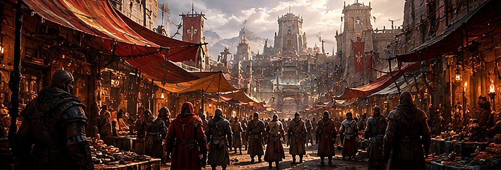
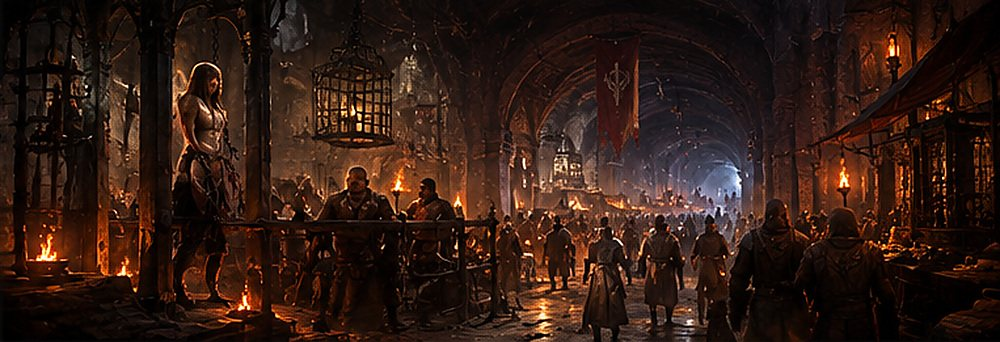
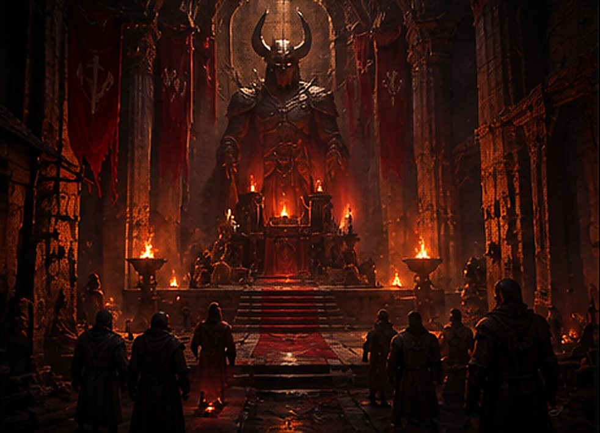
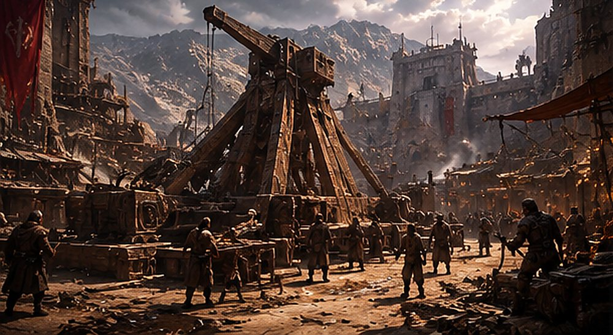
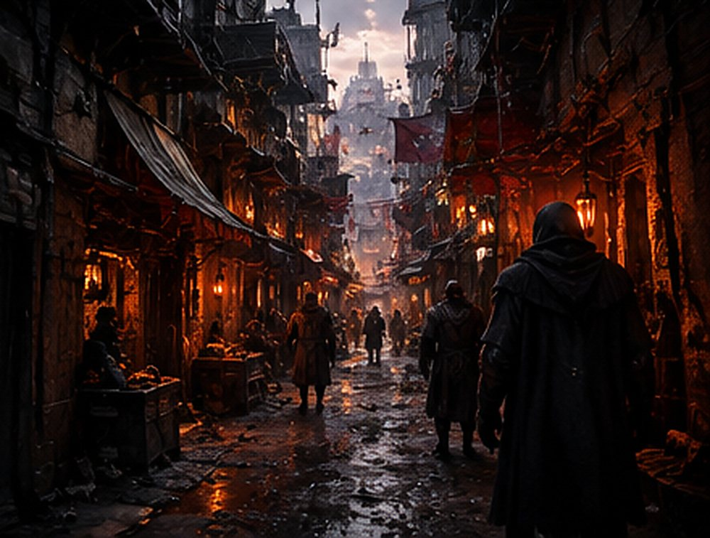

Brakkor
⚒ Brakkor Miasto Cienia · Dawne serce handlu Athelonu „Każdy ma swoją cenę. Nie każdy dożyje chwili, w której ją pozna.”
Brakkor leży niemal w samym środku Athelonu. Dawniej jego położenie czyniło go jednym z najważniejszych węzłów handlowych kontynentu. Przecinały się tu szlaki karawan, kupcy wymieniali towary, a podróżni znajdowali bezpieczny postój przed dalszą drogą.
„Każdy ma swoją cenę. Nie każdy dożyje chwili, w której ją pozna.”
❖Informacje ogólne
Brakkor leży niemal w samym środku Athelonu. Dawniej jego położenie czyniło go jednym z najważniejszych węzłów handlowych kontynentu. Przecinały się tu szlaki karawan, kupcy wymieniali towary, a podróżni znajdowali bezpieczny postój przed dalszą drogą.
Piętnaście lat temu miasto zostało zdobyte przez plemię Goliathów, które uczyniło z niego swoją stałą siedzibę. Od tego czasu legalny handel podupadł, a Brakkor zyskał ponurą sławę miejsca, w którym niemal wszystko można kupić - o ile zna się właściwych ludzi.
⌛Historia miasta
Złoty okres. Przed podbojem Brakkor prosperował dzięki centralnemu położeniu. Nie musiał sam wytwarzać wszystkich sprzedawanych dóbr - wystarczało, że łączył szlaki i zapewniał kupcom miejsce do zawierania umów, przechowywania towarów oraz organizowania transportu.
Zdobycie Brakkoru. Piętnaście lat temu plemię Goliathów dowodzone przez wojownika znanego dziś jako Zimne Serce zajęło miasto siłą. Dawna władza kupiecka została całkowicie obalona. Jej przedstawiciele zostali zabici, rozproszeni lub zmuszeni do ucieczki. Nie zachowano dawnego ustroju ani niezależności kupców.
Miasto pod okupacją. Nowi władcy narzucili niekorzystne warunki handlowe, daniny i przymusowe obowiązki. Wielu dawnych partnerów handlowych zerwało kontakty z Brakkorem. Część kupców przeniosła działalność gdzie indziej, a część zeszła do podziemia.
⚖Gospodarka

Dawna gospodarka Brakkoru opierała się na tranzycie, magazynowaniu, usługach karawanowych i wymianie towarów. Po okupacji większość legalnych przedsięwzięć przestała być opłacalna. Warunki narzucone przez Zimne Serce sprawiają, że kupcy muszą oddawać znaczną część zysków, podporządkowywać się plemieniu i liczyć się z arbitralnymi żądaniami okupantów.
Mimo to miasto nadal zarabia. Głównym źródłem dochodu stał się handel nielegalny, produkcja uzbrojenia oraz opłaty pobierane od ludzi, którzy chcą prowadzić interesy na terenie Brakkoru.
Produkcja uzbrojenia. W miejskich warsztatach wytwarza się broń, zbroje i wyposażenie wojskowe. Szczególne znaczenie mają machiny oblężnicze - tarany, balisty, katapulty i inne konstrukcje sprzedawane nabywcom spoza miasta.
◆Czarny Targ i podziemie

Nielegalny handel jest obecnie najżywszą częścią gospodarki Brakkoru. Nie odbywa się wyłącznie na jednym placu. Tworzą go magazyny, piwnice, prywatne sale, ukryte składy i sieć pośredników, którzy organizują transakcje z dala od oficjalnych targowisk.
Niewolnicy i jeńcy - ludzie oraz przedstawiciele innych ras sprzedawani jako siła robocza lub własność.
Najemnicy - wojownicy gotowi przyjąć zlecenia od kupców, dowódców i przestępców.
Zakazane substancje - narkotyki, środki odurzające i podejrzane preparaty alchemiczne.
Kradzione dobra - kosztowności, broń, dokumenty, towary z karawan i przedmioty o niejasnym pochodzeniu.
Uzbrojenie - broń, zbroje oraz elementy machin oblężniczych.
Zimne Serce wie o działalności podziemia i świadomie pozwala mu funkcjonować. W zamian pobiera część zysków, a jego ludzie pilnują, by nielegalne interesy nie zagroziły bezpośrednio władzy Kharzugów. Nie oznacza to pełnej kontroli nad każdą transakcją - oznacza raczej, że przestępcy działają w granicach tolerowanych przez wodza.
✦Religia i wierzenia

Varkhaz, Pan Złamanego Ładu , jest bóstwem wojny, chaosu, podboju i zniszczenia. Jego nauki głoszą, że porządek istnieje tylko tak długo, jak długo ktoś ma siłę go utrzymać. Słabość nie daje prawa do zachowania pozycji, a zwycięstwo jest dowodem przewagi.
Zimne Serce darzy Varkhaza szczególnym szacunkiem. Nie musi być kapłanem ani fanatykiem. Traktuje boga jako potwierdzenie własnego sposobu myślenia: świat należy do tych, którzy potrafią go sobie podporządkować. Wśród Kharzugów kult może przyjmować formę przysiąg wojennych, ofiar składanych przed wyprawami i rytuałów upamiętniających zwycięstwa.
♛Władza i Kharzug
Brakkorem rządzi wódz plemienia Goliathów, znany jako Zimne Serce . Jego prawdziwe imię pozostaje nieznane. Jest charyzmatycznym przywódcą, który potrafi przekonać swoich wojowników, że brutalność nie jest okrucieństwem dla samego okrucieństwa, lecz koniecznym narzędziem utrzymania porządku i siły.
Zimne Serce nie próbuje odtworzyć dawnego systemu kupieckiego. Uważa, że poprzedni władcy doprowadzili Brakkor do słabości, pozwalając, by pieniądze i układy zastąpiły siłę. W jego rozumieniu zdobycie miasta było dowodem prawa do rządzenia.
Kharzug to osiadłe plemię Goliathów, które po podboju uczyniło Brakkor swoją siedzibą. Nie jest już tylko obozem wojowników. W jego obrębie znajdują się rodziny, rzemieślnicy, strażnicy i osoby odpowiedzialne za codzienne funkcjonowanie plemienia.
Najważniejsze decyzje należą do Zimnego Serca. Najbliżsi mu wojownicy i zaufani członkowie plemienia pomagają utrzymywać kontrolę nad dzielnicami, warsztatami i handlem. Dawna władza kupiecka nie zachowała żadnej oficjalnej pozycji.
⚔Armia i siły zbrojne

Siła Brakkoru opiera się przede wszystkim na wojownikach Kharzugów. Blisko 300 Goliathów należy do plemienia zamieszkującego miasto. Nie wszyscy są żołnierzami, lecz plemię dysponuje znaczną liczbą doświadczonych wojowników, którzy stanowią podstawę okupacyjnej kontroli.
Patrole pilnują bram, głównych ulic, warsztatów i miejsc, w których odbywa się handel. W razie potrzeby wojownicy mogą zostać szybko zebrani pod rozkazami wodza. Ich przewaga nie wynika wyłącznie z liczebności, lecz także z dyscypliny plemiennej, siły fizycznej i dostępu do produkowanego na miejscu uzbrojenia.
Brakkor posiada również warsztaty zdolne wytwarzać machiny oblężnicze. Dzięki temu miasto może sprzedawać sprzęt wojenny innym siłom i wzmacniać własne możliwości obronne.
☻Mieszkańcy i życie codzienne

Brakkor liczy około 1000 mieszkańców , z czego blisko 300 to Goliathowie należący do Kharzugów. Pozostałą część ludności stanowią przede wszystkim dawni mieszkańcy miasta oraz przybysze związani z handlem, rzemiosłem i podziemiem.
Ludność miejscowa jest traktowana przede wszystkim jako siła robocza. Mieszkańcy wykonują ciężkie prace, pracują w warsztatach, obsługują magazyny i realizują obowiązki narzucone przez okupantów. Publiczne upokarzanie, wymuszenia i przemoc są częścią codzienności.
Kradzieże, oszustwa i pobicia zdarzają się często. Mieszkańcy rzadko mogą liczyć na sprawiedliwą ochronę. Straż reaguje przede wszystkim wtedy, gdy zagrożone są interesy Kharzugów lub porządek ustanowiony przez Zimne Serce.
Mimo trudnych warunków miasto nie jest pozbawione zwykłego życia. Działają warsztaty, gospody, targowiska i magazyny. Ludzie próbują utrzymać rodziny, znaleźć pracę i nie zwracać na siebie uwagi nowych władców.
⛰Dzielnice i geografia
Brakkor zajmuje strategiczne położenie w środkowej części Athelonu. Jego dawne ulice i place zostały zaprojektowane z myślą o karawanach, magazynowaniu towarów i sprawnym przemieszczaniu się kupców. Po okupacji wiele budynków zmieniło przeznaczenie, ale układ miasta nadal nosi ślady handlowej przeszłości.
Stary Rynek - dawne centrum handlu, obecnie pod ścisłą kontrolą Kharzugów.
Żelazne Podwórze - kuźnie, warsztaty i hale montażowe uzbrojenia.
Dolne Ulice - gęsto zabudowana, biedniejsza część miasta, w której przemoc i przestępczość są szczególnie widoczne.
Czarny Targ - rozproszona sieć lokali i magazynów wykorzystywanych do nielegalnego handlu.
Wysoki Gród - dawna dzielnica administracyjna, obecnie siedziba Zimnego Serca i najważniejszych wojowników plemienia.
◆Ważne miejsca
Sala Złamanego Tronu - dawna sala zgromadzeń kupieckich, obecnie miejsce, w którym Zimne Serce przyjmuje posłuch i rozstrzyga najważniejsze sprawy.
Aukcja Cieni - określenie używane wobec zamkniętych aukcji niewolników i jeńców. Spotkania odbywają się poza wzrokiem zwykłych mieszkańców, a udział w nich wymaga zaproszenia lub odpowiednich kontaktów.
Hala Oblężnicza - warsztat, w którym powstają większe konstrukcje wojenne. Część machin jest montowana na otwartych dziedzińcach ze względu na swoje rozmiary.
Świątynia Złamanego Ładu - miejsce kultu Varkhaza, związane przede wszystkim z wojownikami Kharzugów i rytuałami przed wyprawami.
Podziemne Składy - nazwa obejmująca magazyny i piwnice wykorzystywane do przechowywania towarów, których nie można wystawiać na oficjalnych targowiskach.
◆Stosunki z innymi miastami
Pozostałe miasta Athelonu nie udzielają Brakkorowi otwartej pomocy. Obawiają się, że interwencja może sprowokować Kharzugów do ataku lub doprowadzić do długotrwałego konfliktu zbrojnego. Niektóre ośrodki czerpią przy tym korzyści z dostaw broni i machin oblężniczych produkowanych w Brakkorze.
Powstała w ten sposób sprzeczność: część władców i kupców oficjalnie potępia okupację, ale jednocześnie korzysta z taniego uzbrojenia oraz usług dostępnych w mieście. Inni zachowują dystans, ponieważ nie chcą ryzykować własnego bezpieczeństwa.
Dawna pozycja Brakkoru jako neutralnego węzła handlowego praktycznie zniknęła. Miasto nadal ma znaczenie dla kontynentu, lecz jego wpływ wynika obecnie z produkcji wojennej, podziemnego handlu i strachu przed Kharzugami.
◆Plotki i niepotwierdzone pogłoski
W Brakkorze krążą opowieści o postaci, która czasami pojawia się w otoczeniu Zimnego Serca. Nikt nie zna jej imienia ani pochodzenia. Niektórzy twierdzą, że jest doradcą wodza, inni, że posiada wpływy większe niż ktokolwiek z Kręgu Pięści. Większość mieszkańców nie chce jednak rozmawiać o tej sprawie głośno.
Poza tym miasto pełne jest pogłosek o ukrytych przejściach pod dawnymi magazynami, zaginionych kupcach i transakcjach, których szczegóły nigdy nie wychodzą na jaw. W Brakkorze prawda rzadko jest darmowa, a niektóre pytania mogą zwrócić uwagę niewłaściwych osób.